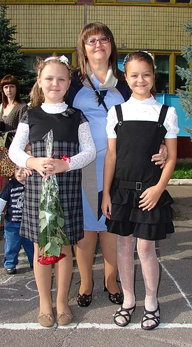

Я вдячна, що Ви завітали на мій сайт
сайт шкільного вчителя географії.
Адже школа була, є і буде в житті кожного. Для учнів – це набуття знань, а для вчителів - книга життя, читаючи яку, сторінку за сторінкою, набирається безцінний досвід.
Бажаю приємної подорожі сторінками сайту!
Вчитель географії, економіки,
історії та курсу "Людина і світ"
Комунального закладу освіти
"Середньої загальноосвітньої школи № 101"
Дніпровської у місті ради
Закінчила Дніпровський національний
університет ім. О. Гончара
Вища категорія "Старший учитель"
Стаж педагогічної роботи 32 років

Професійне кредо:
Віддай людині крихітку себе,Л. Костенко
за це душа наповнюється
світлом.
Моє життєве кредо:
Учитись важко, а учити ще важче,М. Сігнаївський
Але не мусиш зупинятись ти.
Як учням оддаси усе найкраще
Той сам сягнеш високої мети.